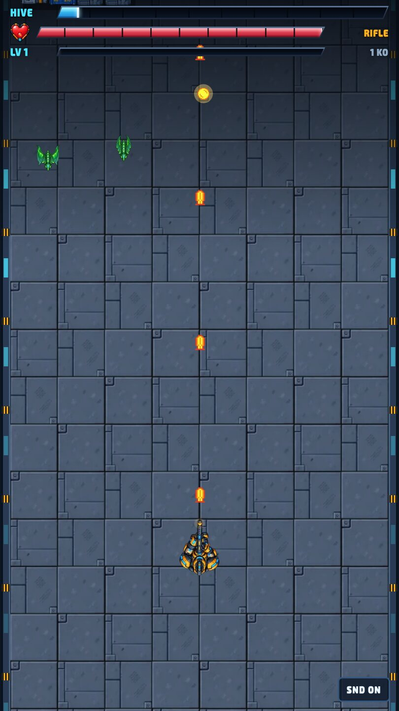
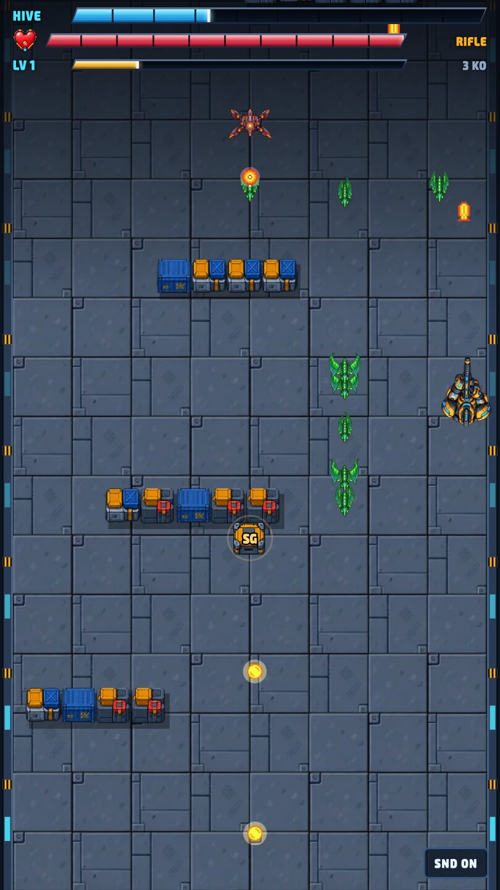
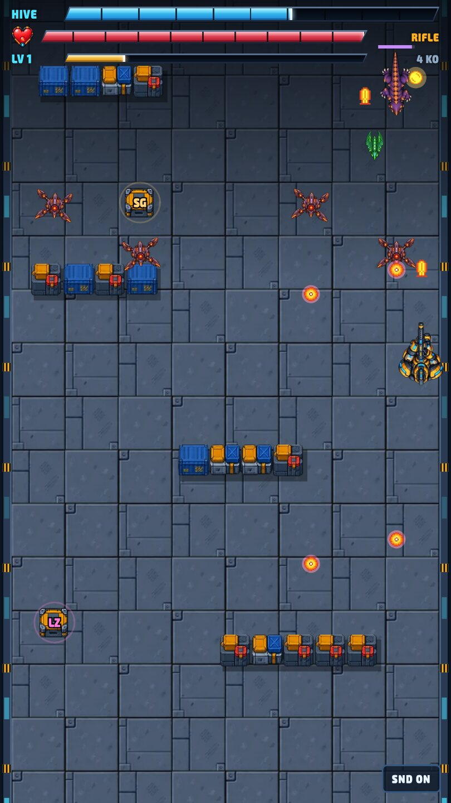
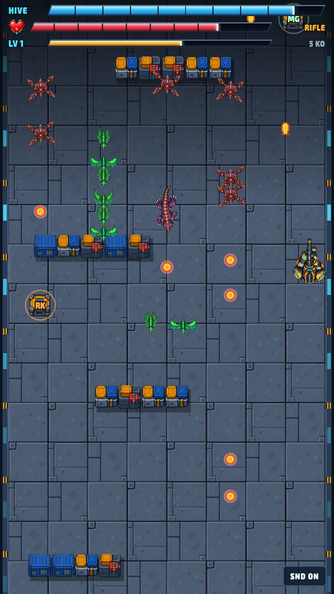

Hive Breach
A one-thumb corridor shooter. Push up an alien hive, build your gun as you go, and destroy the Hive Warden.
Concept
A one-thumb corridor shooter for mobile web. The game runs and shoots for you; the player steers with a drag and decides where to stand. Gold XP from kills triggers a pick of one of three weapon mods, supply crates swap the gun for twelve seconds, and every level ends in a boss fight with the Hive Warden. Next Level keeps every mod and gun level, so the build keeps growing while the hive keeps scaling.
My role
Designer of the core loop, controls, weapon and mod balance, enemy roles, the Hive Warden encounter and level scaling, delivered as a self-contained playable prototype.
Gameplay captures
Screens from the playable prototype.




One thumb, one decision: where to stand
The design question: how much can you remove from a shooter before the game is no longer a game? The answer I landed on was everything except positioning.
- 01
Strip it down to positioning
DecisionThe game runs and fires for you. The player drags to strafe, at 1.3× finger speed, and there is no aim and no fire button.
WhyFor a mobile-web audience, one thumb should be enough. If steering is the only input, every decision is about where to stand.
- 02
Make cover matter
DecisionBarricades block alien fire for 14 hits before breaking. Obstacles that block bullets also block walking enemies, while drones fly over them.
WhyCover only creates decisions if it works on both sides. The drone flying over gives barricades a clear weakness.
- 03
Make chasing kills pay
DecisionGold XP orbs fly to you once you are close.
WhyIt rewards moving toward danger. The magnet turns kill-chasing into the main risk and reward.
- 04
Make every level-up a choice
DecisionEach gun level pauses play for one of three mods. XP needed rises with the level, and a crate swaps in a different gun for 12 seconds. Mods apply to every gun.
WhyChoice is the roguelite hook. Letting mods follow the player across guns means crate pickups are a surprise, not a threat to the build.
- 05
End every level on a fight
DecisionAt 40 seconds the Hive Warden arrives and the corridor stops. It summons swarmers every 6 seconds, so the player keeps earning XP during the boss.
WhyA level of about a minute needs a clear ending. The summons mean the boss fight never stops the progression loop.
- 06
Keep the build, scale the hive
DecisionNext Level keeps every mod and gun level while enemy HP rises by 30% each level. Retry keeps the starting mods, and Main Menu resets everything.
WhyThe player's build grows and the hive scales with it, so a good build is always tested.
- 07
Keep the interface calm
DecisionThe main menu is just the title, a custom Play button and a one-line description. The HUD uses newly made meters instead of stretched ones, and level-up and game-over screens match the menu style. Keyboard players use W/S to move and A/D to select.
WhyA tiny game needs a consistent, uncluttered interface. Matching screens make it feel like one product, and keyboard support makes desktop play easy.
One level, start to finish
- AdvanceThe corridor scrolls and the Rifleman fires on his own.
- DodgeDrag to strafe through alien lines and duck behind barricades.
- CollectGold XP from kills; crates swap your gun for 12 seconds.
- UpgradeEach gun level pauses play: pick one of three mods.
- BossAt 40 seconds the Hive Warden arrives. Kill it to clear the level.
Then repeat, harder. Next Level keeps every mod and gun level, so the build keeps growing while the hive keeps scaling.
Where you stand is the whole game
Drag to move
Drag anywhere on screen to strafe (1.3× finger speed). WASD or arrows on desktop.
Auto-fire
The gun fires straight ahead nonstop. No aiming, no fire button.
Barricades
Block alien fire for 14 hits, then break. Walking aliens must go round them.
XP magnet
Gold orbs fly to you once you are close, so chasing kills pays off.
One rifle, four crate guns
| Weapon | Fires every | Damage | Behaviour |
|---|---|---|---|
| Rifle | 0.30 s | 11 | Default gun, always returns |
| Shotgun | 0.62 s | 5 × 8 | Five-pellet spread, short range |
| Minigun | 0.085 s | 6 | About 12 shots a second |
| Rockets | 0.75 s | 28 + blast | Splash damage on impact |
| Laser | 0.48 s | 18 | Pierces every alien in line |
A supply crate drops every 6–9 seconds in a random lane. Grab it to swap guns for 12 seconds. Mods apply to every gun.
Pick one of three
| Mod | Effect at level 1 / 2 / 3 |
|---|---|
| Ricochet Rounds | Bullets bounce to 1 / 2 / 3 more targets |
| Escort Drone | 1 / 2 / 3 drones fire beside you |
| Arc Coil | Hits arc lightning to 2 / 3 / 4 aliens |
| Payload Shells | Hits explode, radius 44 / 58 / 72 |
| Split Barrel | Fire 2 / 3 / 4 parallel streams |
| Overclock | Fire rate +35% / +70% / +105% |
| Field Repair | Restore 35 hull (fills an empty slot) |
XP to next gun level = 5 + 3.4 × current level. Choose with a tap, or W/S and A/D on keyboard.
Three aliens, three jobs
| Enemy | Role | Behaviour | Stats |
|---|---|---|---|
| Venowat | Swarmer | Fast and fragile. Rushes in rows and columns, explodes on contact. Walks round barricades. | HP 12 · speed 85 · hit 10 · XP 1 |
| Assault Drone | Spitter | Hovers near the top for 5–7 s and fires down your lane. Flies over barricades, so use them as shields. | HP 26 · shot 12 every 1.6 s · XP 2 |
| Walker | Brute | Slow tank that soaks fire. After 20 s it arrives with two swarmer escorts. | HP 90 · speed 34 · hit 22 · XP 4 |
Waves: rows only for the first 6 s, then columns and drones, then Walkers from 12 s. Enemy HP grows over the level and by 30% per level.
The Hive Warden
40 s
Arrives; the corridor stops. Two barricades drop in as cover.
1,300 HP
At level 1, +40% per level.
Phase 1
Sweeps side to side. Fires a 7-shot fan at you every 2.2 s (14 damage each).
Rage, under 50%
Fans widen to 9 shots, every 1.5 s.
Summons
Calls a swarmer wave every 6 s, so you keep earning XP.
Your build grows, the hive scales
| Level | Enemy HP | Warden HP | Waves |
|---|---|---|---|
| 1 | × 1.0 | 1,300 | × 1.00 speed |
| 2 | × 1.3 | 1,820 | × 1.12 speed |
| 3 | × 1.6 | 2,340 | × 1.24 speed |
| 5 | × 2.2 | 3,380 | × 1.48 speed |
Next Level keeps mods and gun level and refills the hull. Retry replays the same level with the mods you started it with. Main Menu goes back to level 1 with no mods.
What is built
Built
One 2.5 MB HTML file with art, fonts and audio inside. Runs offline. Vanilla JavaScript and Canvas 2D, no engine or libraries. Portrait-first, scales to desktop with keyboard support. Sprites from the Fortress Zero asset set; menus and HUD drawn in code.